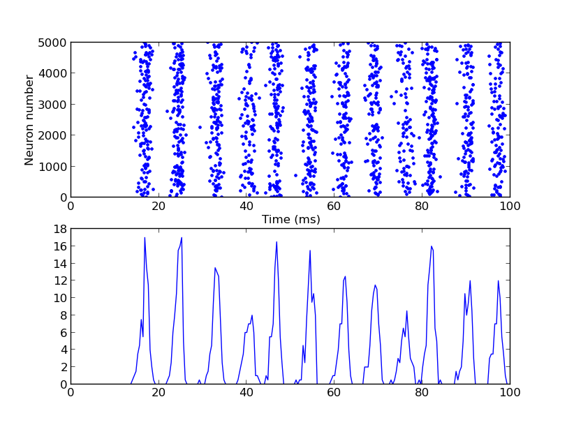

For the paper: Fast Global Oscillations in Networks of Integrate-and-Fire Neurons with Low Firing Rates. Nicolas Brunel & Vincent Hakim Neural Computation 11, 1621-1671 (1999) a brian simulator model is available at this web page: http://briansimulator.org/docs/examples-frompapers_Brunel_Hakim_1999.html That reproduces an example of Figure 3C  This simulation requires Brian which can be downloaded and installed from the instructions available at http://www.briansimulator.org/ For support on installing and using Brian simulations there is a support group at https://groups.google.com/group/briansupport.